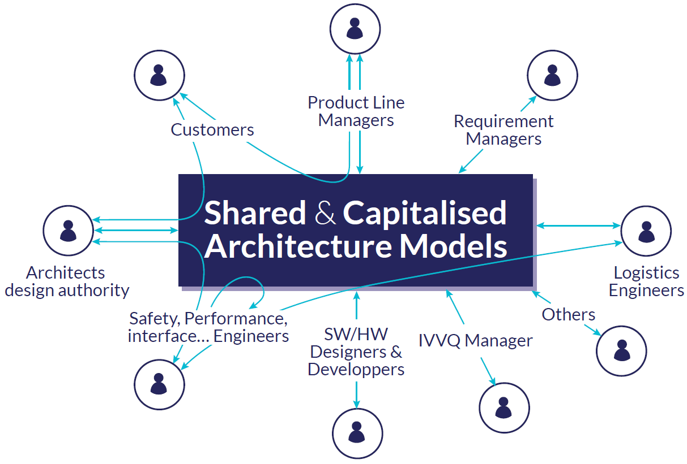

Why MBSE? Maintaining the Consistency of the Whole Product Definition
Across all industry domains (energy, aerospace, transportation, healthcare), customers are demanding new products that are more and more complex and interconnected. These new products must be intelligent, safer, eco-friendly, connected, and remain affordable.
It implies to design and assemble numerous components and sub-components assigned to many experts, in a variety of domains (software, mechanical, electrical, electronics, etc). All these components must fit together properly and collectively realize the expected product’s functions, and finally meet the customer’s requirements.
The Systems Engineering approach aims to facilitate collaboration by enabling the sharing of a common system definition among all involved stakeholders.

But, in a classical document-driven Systems Engineering approach the system is described by a stack of heterogeneous documents, mainly based on office-based formats. This poses the problem of maintaining the consistency of the whole product definition.
To cope with this issue the architects of a product have to move from a document-driven approach to a coherent, integrated, and computational description of the whole system.
MBSE Principles: Using a Formal Digital Language
A Model-Based Systems Engineering (MBSE) approach consists in using a formal digital language to specify, design, analyze, and verify a system. It enables the implementation of workbenches providing modeling services such as edition, visualization, transformation, comparison, storage, etc.

It allows systems architects to work on a system across the whole spectrum from a business needs perspective, to the physical implementation, including the logical decomposition of the system.
Having both a functional view of the system as well as traceability right up to the physical components ensures the integrity of the system’s description and the full traceability throughout the systems engineering process. This reduces inconsistencies and facilitates assembly by allowing early identification of any incompatibilities between components.
An MBSE approach can also be associated with a graphical notation, so that the system is visually described by multiple consistent views. Synchronized with the model these views ensure the consistency of the whole system’s description.
Benefits of MBSE: Enabling the Digital Thread
The model being digital, it is possible to automate many engineering activities:
- consistency validation,
- derivation of architecture alternatives,
- variability management,
- product line engineering,
- trade-offs evaluation,
- production of deliverables,
- exchanges with other engineering tools,
- reuse of architectures between several projects.
This digital thread allows systems engineers to explore more alternatives faster, address a broad range of multi-disciplinary concerns in a consistent way, and successfully achieve the correct objectives.
An Open-Source MBSE Method and Tool: the Arcadia and Capella Duo
Arcadia is a field-proven methodology that supports these MBSE concepts.
Inspired by the concepts of SysML, a general-purpose modeling language for Model-Based Systems Engineering applications, Arcadia focuses on the design of systems architectures.
While SysML is not associated with any particular method, although several engineering methods can be followed, Arcadia is structured on different engineering perspectives that establish a clear separation between system context and need modeling. The objective of this MBSE solution is to enable to:
- understand the real customer need,
- define and share the product architecture among all engineering stakeholders,
- early validate its design and justify it,
- ease and master Integration, Validation, Verification, Qualification (IVVQ).
Its companion solution, Eclipse Capella™, is an open-source MBSE tool that natively implements Arcadia.

Learn more:
- Industrial MBSE Case-Studies: Thales, Rolls-Royce, Deutsche Bahn, Naval Group, and more...
- Why Capella? Taking on the Challenges of Complex Systems Engineering
- Making the Case: MBSE versus Spreadsheets and Documents
- How to Implement MBSE: Equivalences and differences between SysML and Arcadia/Capella
- Capella and Arcadia Overview in other languages